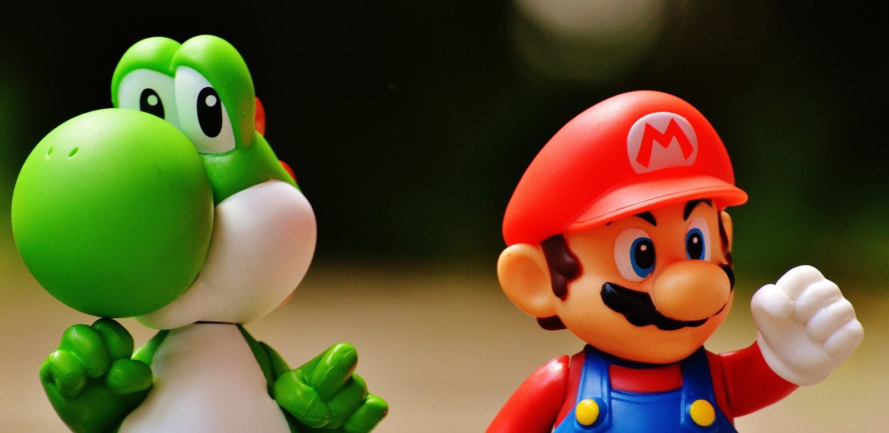

Wie is Super Mario?
Super Mario is de loodgieter van Nintendo, bedacht door Shigeru Miyamoto. Hier lees je hoe hij begon, welke power-ups hij heeft, wie er om hem heen staan en in welke films hij zit.

In het kort
Super Mario is een Italiaanse loodgieter met een rode pet, bedacht door Shigeru Miyamoto voor spelmaker Nintendo. Hij heeft geen superkrachten zoals Superman. Wat hij heeft is een geweldige sprong, en power-ups die hij onderweg oppakt.
| Echte naam | Mario. In zijn eerste spel heette hij nog Jumpman |
| Wat hij doet | Loodgieter, en de held van het Paddenstoelenrijk |
| Superkracht | Springen. De rest komt uit zijn power-ups |
| Eerste keer in een spel | Donkey Kong, het speelhalspel uit 1981 |
| Bedacht door | Shigeru Miyamoto, voor Nintendo |
| Gespeeld door | Bob Hoskins (film 1993); Chris Pratt spreekt hem in (tekenfilm 2023) |
| Hoort bij | Zijn broer Luigi, en Nintendo |
Hoe hij begon
In 1981 maakte Shigeru Miyamoto een speelhalspel voor Nintendo. Hij noemde het Donkey Kong, naar de grote aap erin, en zijn hoofdpersoon noemde hij Jumpman: de man die springt. Meer was hij nog niet.
Twee jaar later kreeg hij zijn eigen spel. Mario Bros. uit 1983 was het eerste spel met zijn naam in de titel, en daarin speelt ook zijn broer Luigi mee. Sindsdien is Mario het gezicht van Nintendo geworden, en van de spellen die daarna kwamen zijn er wereldwijd honderden miljoenen verkocht.
Wat hij kan
- Springen. Dit is zijn echte kunst en zijn enige vaste kracht. Hij springt op vijanden, tegen blokken en over kloven heen.
- Super Paddenstoel. Hij wordt groter en sterker, en kan een klap hebben zonder meteen te verliezen.
- Vuurbloem. Hiermee gooit hij stuiterende vuurballen.
- Super Ster. Heel even is hij onoverwinnelijk en rent hij dwars door alles heen.
- IJsbloem. Hiermee bevriest hij vijanden, zodat hij ze kan oppakken of eroverheen kan lopen.
- Cape of Tanuki-pak. Hiermee kan Mario vliegen en zweven.
- 1-Up paddenstoel. De groene: die geeft hem een extra leven, handig als een level lastig is.
Wil je ze allemaal op een rij? Lees dan de power-ups van Mario.
Wie er om hem heen staan
- Luigi: zijn jongere tweelingbroer, langer en banger dan Mario, in het groen.
- Prinses Peach: de prinses van het Paddenstoelenrijk, en degene die Mario meestal komt redden.
- Yoshi: de groene dinosaurus die hem helpt en die vijanden inslikt.
- Toad en Toadette: de paddenstoelmensen die in het kasteel van Peach wonen en Mario op weg helpen.
- Prinses Daisy: de prinses van Sarasaland, vaak te zien in de sport- en racespellen.
Zijn tegenstanders
- Bowser: de koning van de Koopa's, een grote schildpaddraak die vuur spuwt. Hij ontvoert Peach, en hij is in vrijwel elk spel de eindbaas.
- Bowser Jr.: de zoon van Bowser, klein maar net zo vervelend, meestal in een vliegende kuip.
- De Koopalings: een groep schurken die voor Bowser vecht, elk met een eigen kleur en een eigen truc.
- Wario: de hebberige spiegelfiguur van Mario, in het geel en paars. Hij begon als tegenstander en kreeg later zijn eigen spellen.
- Donkey Kong: de grote aap uit het spel van 1981 waarin Mario voor het eerst te zien was. Tegenwoordig is hij vaker vriend dan vijand.
In welke films zit hij?
Vier films, in vier heel verschillende soorten:
- Super Mario Bros.: The Great Mission to Rescue Princess Peach! (1986): een Japanse tekenfilm, buiten Japan nauwelijks te zien geweest
- Super Mario Bros. (1993): een speelfilm met echte acteurs, met Bob Hoskins als Mario
- The Super Mario Bros. Movie (2023): de grote tekenfilm die alle records brak, met Chris Pratt als de stem van Mario
- The Super Mario Galaxy Movie (2026): het vervolg daarop, uitgekomen op 1 april 2026
Waarom hij zo bekend is
Mario is niet de sterkste en niet de slimste. Hij is de eerste held die miljoenen kinderen zelf konden besturen, en dat is het verschil met een held uit een strip of een film. Je kijkt niet naar Mario, je bent hem. Daarom kent bijna iedereen zijn sprong, zijn pet en het geluid van een munt, ook mensen die nooit een spel hebben gespeeld.
👪 Tip voor ouders
De Mario-spellen horen bij de rustigste die er zijn: geen bloed, geen wapens, en verliezen betekent gewoon opnieuw beginnen. Ze zijn daarmee vaak een goede eerste kennismaking met spelen. Voor de films geldt dat niet vanzelf, want die hebben een eigen advies; de speelfilm uit 1993 is een stuk donkerder van toon dan de tekenfilms. Kijk voor het actuele advies per titel op Kijkwijzer.
💡 Wist je dat?
Mario is begonnen als timmerman, niet als loodgieter, en hij had toen nog helemaal geen naam: in Donkey Kong uit 1981 staat hij gewoon als Jumpman in het spel. Pas met Mario Bros. in 1983 kreeg hij zijn naam en zijn beroep.
Meer weten? Bekijk de hele Super Mario pagina, lees alles over de power-ups, of kijk bij het leukste Super Mario speelgoed.
Zelf spelen
Speel de avonturen van Mario na met dit speelgoed, met de actuele prijs bij bol:
Veelgestelde vragen
Wie is Super Mario eigenlijk?
Mario is een Italiaanse loodgieter met een rode pet en een snor, en het bekendste figuurtje van spelmaker Nintendo. Hij redt keer op keer prinses Peach uit de handen van Bowser, samen met zijn broer Luigi.
Hoe heette Mario vroeger?
Jumpman. In zijn allereerste spel, het speelhalspel Donkey Kong uit 1981, had hij nog geen eigen naam en heette hij gewoon Jumpman, oftewel springman. Mario Bros. uit 1983 was het eerste spel met zijn eigen naam in de titel.
Wie heeft Mario bedacht?
Spelontwerper Shigeru Miyamoto, voor Nintendo. Hij bedacht het spel Donkey Kong en de hoofdpersoon die daarin over de vaten moest springen.
Welke power-ups heeft Mario?
De bekendste zijn de Super Paddenstoel (hij wordt groter en sterker), de Vuurbloem (hij gooit vuurballen), de Super Ster (hij is heel even onoverwinnelijk), de IJsbloem (hij bevriest vijanden), en de Cape en het Tanuki-pak (hij kan vliegen). De groene 1-Up paddenstoel geeft hem een extra leven.
In welke films speelt Mario mee?
In de Japanse tekenfilm Super Mario Bros.: The Great Mission to Rescue Princess Peach! uit 1986, in de speelfilm Super Mario Bros. uit 1993 met Bob Hoskins als Mario, in de tekenfilm The Super Mario Bros. Movie uit 2023 waarin Chris Pratt hem inspreekt, en in het vervolg The Super Mario Galaxy Movie, dat op 1 april 2026 uitkwam.
Namen, jaartallen en filmgegevens gecontroleerd op 13 september 2026.